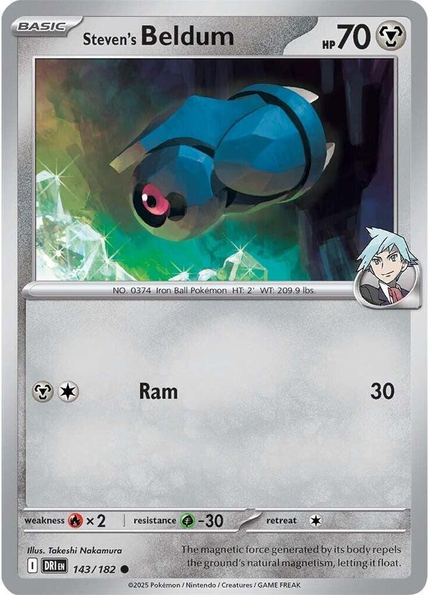
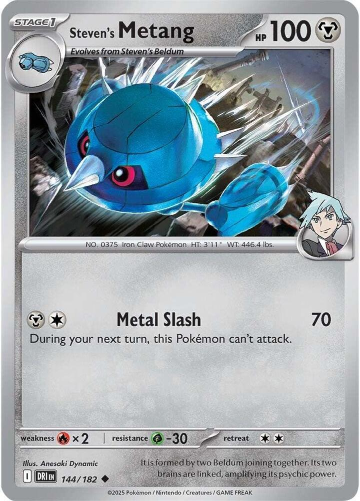
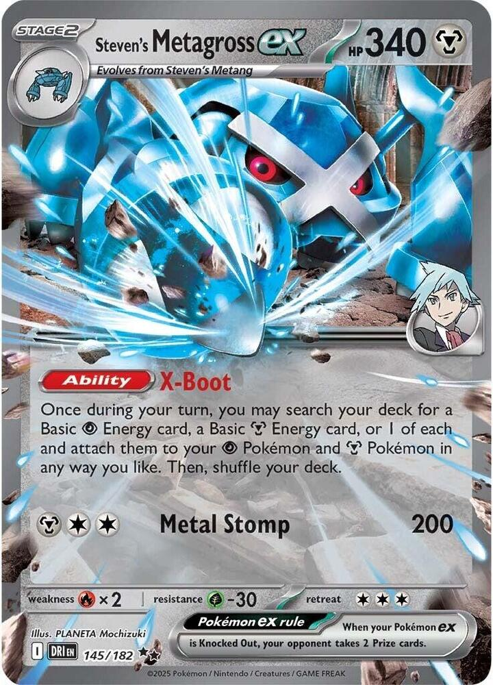
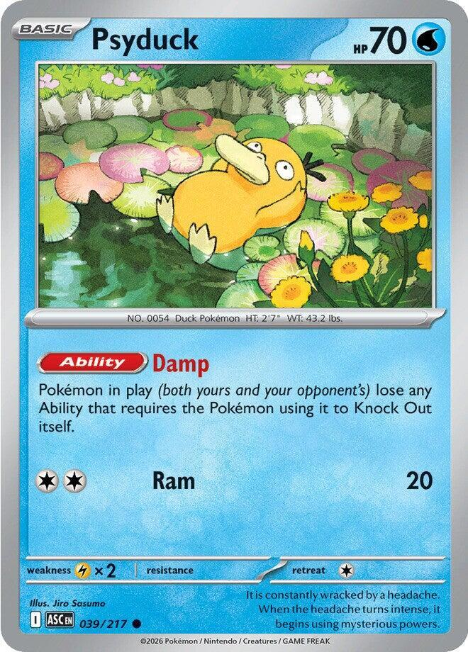
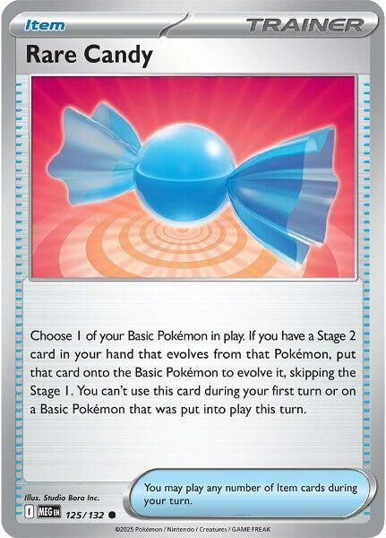
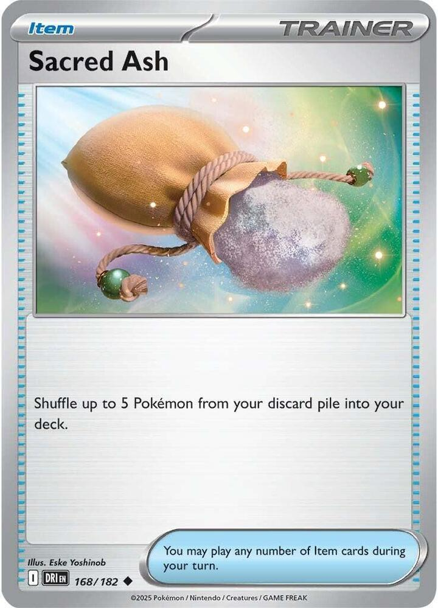
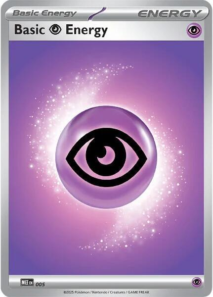
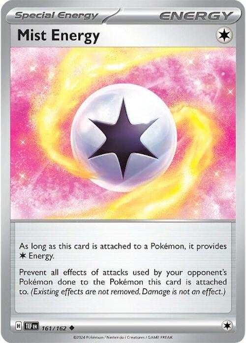
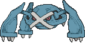
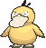

x4
x4 x4
x4 x4
x4
x3

x2 x2
x2
 x3
x3 x2
x2![Boss's Orders [Ghetsis]](./assets/654453_bosss-orders-ghetsis.jpg) x2
x2 x2
x2
 x3
x3
x2 x2
x2

 x2
x2

 x2
x2 x2
x2
 x5
x5
x4
x2 Robot Swords
Robot Swords 


Doublade swings for 60 a sword · Steven's Metagross ex loads two Energy a turn, every turn · two robots on the Bench
← back to all decksx4x4x4
x3

x2x2
x3x2x2x2x3
x2x2
x2x2x2x5
x4
x2Pokémon (21)
| Qty | Card | Set | Number | Reg |
|---|---|---|---|---|
| 4 | Honedge | Perfect Order | 056 | J |
| 4 | Doublade | Mega Evolution Promo | 067 | J |
| 4 | Aegislash | Perfect Order | 058 | J |
| 3 | Steven's Beldum | Destined Rivals | 143 | I |
| 1 | Steven's Metang | Destined Rivals | 144 | I |
| 2 | Steven's Metagross ex | Destined Rivals | 145 | I |
| 2 | Genesect ex | Black Bolt | 067 | I |
| 1 | Psyduck | Ascended Heroes | 039 | I |
Trainers (28)
| Qty | Card | Type | Set | Number | Reg |
|---|---|---|---|---|---|
| 3 | Dawn | Supporter | Phantasmal Flames | 087 | I |
| 2 | Lana's Aid | Supporter | Twilight Masquerade | 155 | H |
| 2 | Boss's Orders | Supporter | Mega Evolution | 114 | I |
| 2 | Team Rocket's Petrel | Supporter | Destined Rivals | 176 | I |
| 1 | Hilda | Supporter | White Flare | 084 | I |
| 3 | Buddy-Buddy Poffin | Item | Temporal Forces | 144 | H |
| 2 | Rare Candy | Item | Mega Evolution | 125 | I |
| 2 | Poke Pad | Item | Perfect Order | 081 | J |
| 1 | Night Stretcher | Item | Shrouded Fable | 061 | H |
| 1 | Sacred Ash | Item | Destined Rivals | 168 | I |
| 2 | Energy Recycler | Item | Destined Rivals | 164 | I |
| 1 | Switch | Item | Mega Evolution | 130 | I |
| 1 | Max Rod | Item, ACE SPEC | Prismatic Evolutions | 116 | H |
| 2 | Brave Bangle | Tool | White Flare | 080 | I |
| 2 | Battle Cage | Stadium | Phantasmal Flames | 085 | I |
| 1 | Full Metal Lab | Stadium | Temporal Forces | 148 | H |
Energy (11)
| Qty | Card | Set | Number | Reg |
|---|---|---|---|---|
| 5 | Basic Metal Energy | Mega Evolution Energies | 008 | - |
| 4 | Basic Psychic Energy | Mega Evolution Energies | 005 | - |
| 2 | Mist Energy | Temporal Forces | 161 | H |
21 + 28 + 11 = 60. ✓ Ten Basics, ten Supporters, twelve swords, one ACE SPEC, and nothing over four copies.
Ten Basics is a 26% mulligan. Going first, a Steven's Beldum, Poffin, or Poke Pad shows up by the end of your first turn 71% of the time, and a Rare Candy or a Petrel to find one is in your first nine cards 49% of the time. So X-Boot is running on turn two in about half your games and on turn three in most of the rest, through the Steven's Metang. Genesect ex or a Dawn is in your first nine cards only 57% of the time; see Test and Tune. About one opening hand in five (22%) holds no Energy.


 Metal
Metal Fire ×2
Fire ×2 Grass -30
Grass -30 2
2 legal (Reg J)Cut (10)
legal (Reg J)Cut (10)70 HP Basic, Fire Weakness, Grass Resistance, Retreat 2. Cut does 10 and you will never use it.
Four copies, two jobs. It is the bottom of the line, and it is a sword while it sits in your hand. Every Honedge on the Bench is 60 off this turn's swing, so turn one benches two (one to evolve in the Active Spot, one behind it) and the rest stay in hand. Poffin and Poke Pad find it, and Dawn takes it as the Basic.
 MetalFire ×2Grass -302legal (Reg J)Weaponized Swords (60x) - Reveal any number of Honedge, Doublade, and Aegislash from your hand, and this attack does 60 damage for each card you revealed in this way.
MetalFire ×2Grass -302legal (Reg J)Weaponized Swords (60x) - Reveal any number of Honedge, Doublade, and Aegislash from your hand, and this attack does 60 damage for each card you revealed in this way.Stage 1, 100 HP, Fire Weakness, Grass Resistance, Retreat 2. The Mega Evolution promo 067, Yukihiro Tada's art, mark J. It is the same card as Perfect Order 057.
Weaponized Swords costs . Reveal any number of Honedge, Doublade, and Aegislash from your hand, and it does 60 for each one. Revealed, not discarded. The cards go back into your hand and swing again next turn.
Four copies. One is the attacker, one waits in hand for the next Honedge, and the rest are swords. Its cost is all Colorless, so X-Boot's Psychic Energy pays for it as well as the Metal does.
100 HP means it dies, and that is the plan, because it is one Prize. Everything attached to it goes to the discard with it.

 MetalFire ×2Grass -303legal (Reg J)Slash (80)Metal Slash (230) - During your next turn, this Pokémon can't use attacks.
MetalFire ×2Grass -303legal (Reg J)Slash (80)Metal Slash (230) - During your next turn, this Pokémon can't use attacks.Stage 2, 150 HP, Fire Weakness, Grass Resistance, Retreat 3.
Slash does 80 for . Metal Slash does 230 for , and this Pokémon can't attack during your next turn.
Four copies, and in most games none of them touches the board. It is the purest sword, so Metallic Signal takes it first. It comes out when three swords or fewer are left, or after Judge or Unfair Stamp; Who attacks has the rule. A Doublade that already holds two Energy evolves, takes two more from X-Boot, and has the four Metal Slash needs without a card from your hand.

 MetalFire ×2Grass -301legal (Reg I)Ram (10)
MetalFire ×2Grass -301legal (Reg I)Ram (10)70 HP Basic, Retreat 1. "Steven's" is part of the name, so it evolves only into Steven's Metang, and Rare Candy takes it only to Steven's Metagross ex.
Three copies. One is the Candy target, which has to sit a turn before the Candy. The others are spares for a prized Candy or a dragged-up Beldum. Poffin and Poke Pad find it.
 MetalFire ×2Grass -302legal (Reg I)Metal Slash (70) - During your next turn, this Pokémon can't attack.
MetalFire ×2Grass -302legal (Reg I)Metal Slash (70) - During your next turn, this Pokémon can't attack.Stage 1, 100 HP, Retreat 2, and no Ability. It is the slow road to Steven's Metagross ex when no Candy shows: Beldum on turn one, Metang on turn two, Metagross on turn three. One copy. Signal and Poke Pad find it. Its Metal Slash locks itself out, and you will never use it.
 MetalFire ×2Grass -303legal (Reg I)Metal Stomp (200)
MetalFire ×2Grass -303legal (Reg I)Metal Stomp (200)The engine. Stage 2, 340 HP, Fire Weakness, Grass Resistance, Retreat 3, two Prizes.
X-Boot: once during your turn, search your deck for a Basic Psychic Energy, a Basic Metal Energy, or one of each, and attach them to your Psychic Pokémon and Metal Pokémon in any way you like.
Metal Stomp does 200 for . That is a swing that ignores your hand entirely, from a 340 HP body that most single hits in the format can't Knock Out.
Two copies, one in play. It is two Prizes, so a second one is two more in the open for an engine you already have. Genesect ex's Signal finds it, and so do Dawn and Hilda.
 MetalFire ×2Grass -302legal (Reg I)Protect Charge (150) - During your opponent's next turn, this Pokémon takes 30 less damage from attacks (after applying Weakness and Resistance).
MetalFire ×2Grass -302legal (Reg I)Protect Charge (150) - During your opponent's next turn, this Pokémon takes 30 less damage from attacks (after applying Weakness and Resistance).220 HP Basic, Fire Weakness, Grass Resistance, Retreat 2, two Prizes. Black Bolt 067.
Metallic Signal: once during your turn, search your deck for up to 2 Evolution Metal Pokémon and put them into your hand. Doublade and Aegislash both count, so it is +120 damage every turn. Steven's Metang and Steven's Metagross ex count too, which makes Signal the fastest way to the Candy's target.
Two copies, one in play. Beside a Metagross ex, it makes four Prizes on the Bench in two bodies, and that is the ceiling. Signal searches the deck, never the hand or the discard, so Sacred Ash is what refills it. Protect Charge does 150 for , an emergency swing only.

 1legal (Reg I)Ram (20)
1legal (Reg I)Ram (20)70 HP Basic, Lightning Weakness, Retreat 1. Ascended Heroes 039.
Damp: Pokémon in play lose any Ability that requires the Pokémon using it to Knock Out itself. That is Dusknoir's and Dusclops's Cursed Blast.
One copy. It is the tenth Basic and the Dusknoir answer. Bench it only when they show a Duskull; otherwise it is a pivot.
 legal (Reg I)
legal (Reg I)It searches the deck for a Basic, a Stage 1, and a Stage 2 Pokémon. Three copies, and the best card in the deck.
 legal (Reg H)
legal (Reg H)It puts up to three Pokémon without a Rule Box or Basic Energy from the discard into your hand. Two copies. Every Doublade that dies puts two swords in the discard, and Lana's brings three back. It can't take Genesect ex or Steven's Metagross ex.
 legal (Reg I)
legal (Reg I)It switches one of their Benched Pokémon into the Active Spot. Two copies.
legal (Reg I)It searches the deck for a Trainer card. Two copies. It is the second and third Rare Candy, the second Max Rod and Sacred Ash, and the Stadium toolbox. Supporters it finds wait for next turn.
 legal (Reg I)
legal (Reg I)It searches the deck for an Evolution Pokémon and an Energy card. One copy. It takes Steven's Metagross ex and an Energy for the Candy turn, or an Aegislash and a Metal after the hand is shuffled away.
 legal (Reg H)
legal (Reg H)Two Basic Pokémon with 70 HP or less, straight to the Bench. Three copies. Honedge, Steven's Beldum, and Psyduck qualify. It is a turn-one card; late in the game it benches swords instead of drawing them.
legal (Reg I)Two copies. Steven's Beldum to Steven's Metagross ex, skipping the Metang. Two timing rules decide openings: never on your first turn, and never on a Beldum that arrived this turn. Search first, then Candy. Petrel finds a third.
legal (Reg J)It searches the deck for a Pokémon without a Rule Box. Two copies, printed Poké Pad. Any sword, a Steven's Beldum, or the Steven's Metang. Never an ex.
 legal (Reg H)
legal (Reg H)It puts a Pokémon or a Basic Energy from the discard into your hand. One copy. It is the cheap way back for a Genesect ex or a Steven's Metagross ex, which Lana's can't touch.
legal (Reg I)It shuffles up to five Pokémon from the discard into the deck. One copy. It is the only card that refills what Signal, Dawn, and Poke Pad search. Play it before Signal.
legal (Reg I)It shuffles up to five Basic Energy from the discard into the deck. Two copies, one more than Dancing Swords, because X-Boot pulls two out of the deck every turn and every Knock Out buries two more. Keep both types in the shuffle; X-Boot only finds two when it can find one of each.
legal (Reg I)It swaps your Active Pokémon with a Benched one. One copy. Metagross ex costs 3 to retreat, and so does an Aegislash after Metal Slash.

 ACE SPEC Rarelegal (Reg H)
ACE SPEC Rarelegal (Reg H)It puts up to five Pokémon and Basic Energy, in any combination, from the discard into your hand. The ACE SPEC. It is worth up to +300 late in the game, when the swords run dry. Once per game, so hold it for the turn it makes a Knock Out.
legal (Reg I)If the Pokémon it is attached to has no Rule Box, its attacks do 30 more to the opponent's Active Pokémon ex. Two copies. Five swords and a Bangle are 330, which Knocks Out Dragapult ex and everything at 330; six and a Bangle are 390, which Knocks Out Mega Venusaur ex. It does nothing on Steven's Metagross ex, which has a Rule Box, and it goes to the discard with the Doublade wearing it.
legal (Reg I)It prevents damage counters from being placed on Benched Pokémon, both players', by effects of the opponent's attacks and Abilities. Two copies. Phantom Dive, Chaotic Pain on your Bench, and Cursed Blast on a benched Pokémon all stop. It also replaces their Risky Ruins, Forest of Vitality, or Full Metal Lab.
Pokémon (both yours and your opponent’s) take 30 less damage from attacks from the opponent's Pokémon (after applying Weakness and Resistance).legal (Reg H)Metal Pokémon, both players', take 30 less damage from attacks. One copy. It makes Steven's Metagross ex an effective 370. Never play it against a Metal deck, since it shields their Pokémon from your swings too. Counters ignore it.
legalFive, Mega Evolution Energies 008. It pays the in Metal Slash and Metal Stomp, and X-Boot takes one a turn.
legalFour, Mega Evolution Energies 005. Nothing in the deck is Psychic, and nothing needs to be: Doublade's cost is all Colorless, and X-Boot attaches Psychic Energy to Metal Pokémon. The Psychic Energy is here so that X-Boot finds two a turn instead of one.
Energy. Prevent all effects of attacks from your opponent’s Pokémon done to the Pokémon this card is attached to. (Existing effects are not removed. Damage is not an effect.)legal (Reg H)It provides , and it prevents all effects of attacks from their Pokémon done to the Pokémon holding it. Damage is not an effect. Two copies. On the Active Doublade it stops Chaotic Pain, Powerful Hand, Sleep, and Confusion. X-Boot can't find it, and nothing brings it back.
The format runs on Pokémon ex worth two and three Prizes. This deck runs on a 100 HP Stage 1 worth one, and it trades.
Weaponized Swords does 60 for every Honedge, Doublade, and Aegislash in your hand, and the cards stay there.
| Swords in hand | Damage | With Brave Bangle | Knocks Out |
|---|---|---|---|
| 2 | 120 | 150 | Dreepy, Drakloak, Munkidori, Riolu, Gastly, Haunter, Drilbur, Cynthia's Gabite, Lunatone, Solrock |
| 3 | 180 | 210 | Toxtricity, Alakazam, Dhelmise, Crustle, Cynthia's Roserade, Meganium, Meowth ex |
| 4 | 240 | 270 | Genesect ex, Fezandipiti ex, Teal Mask Ogerpon ex, Cinccino ex; Okidogi ex with Bangle |
| 5 | 300 | 330 | Gengar ex, N's Zoroark ex, Blissey ex; with Bangle, Dragapult ex, Mega Zygarde ex, and everything at 330 |
| 6 | 360 | 390 | Mega Lucario ex, Mega Excadrill ex, Mega Gengar ex, Mega Charizard X ex; Mega Venusaur ex with Bangle |
| 7 | 420 | 450 | Cynthia's Garchomp ex wearing Cynthia's Power Weight (400) |
Nothing in the format resists Metal. Lillie's Clefairy ex (190) dies to two swords, and Mega Froslass ex (310) and Mega Floette ex (250) to three, since all three are weak to it.
Doublade has no Rule Box and no Ability. Crustle's Mysterious Rock Inn, Cornerstone Mask Ogerpon ex, and Neutralization Zone all stop Pokémon ex or Pokémon with Abilities, and none of them touch it.
The swords are the resource, and every exchange costs two. The promoted Honedge takes a Doublade from your hand, and a fresh Honedge goes down behind it. Signal pays two back each turn, and Dawn, Lana's Aid, Poke Pad, and Max Rod grow the hand.
This build's difference is the Energy, and the price is Prizes. X-Boot never misses, and Steven's Metagross ex can swing for 200 off an empty hand. In exchange, the Bench holds two Pokémon worth two Prizes each, where Dancing Swords holds one.
| Spot | Put here | Never |
|---|---|---|
| Active | A Doublade holding two Energy | Genesect ex; Metagross ex only by the rule |
| Bench | One Steven's Metagross ex | A second Metagross ex while the first lives |
| Bench | One Genesect ex | A second Genesect ex while the first lives |
| Bench | One Honedge, loaded by X-Boot | A second backup sword after turn two |
| Bench | A Steven's Beldum until the Metagross lands, then an open spot | Psyduck, unless they run Dusknoir |
The target board is a Doublade in front, and Metagross ex, Genesect ex, one loaded Honedge, and an open spot behind it. That is three swords on the board, and four Prizes on the Bench in two bodies, which is the most it should ever hold.
. Only Metal Slash and Metal Stomp need an , and X-Boot brings one every turn.
| The board | Attack with | Why |
|---|---|---|
| Four swords or more in hand | Doublade, Weaponized Swords | 240 or more, for one Prize |
| Three swords or fewer, and 230 Knocks Out the target | Aegislash, Metal Slash | 230 beats 180, and X-Boot pays the four |
| The hand was just shuffled away | Aegislash or Steven's Metagross ex | neither needs swords |
| Their attacker can't Knock Out 340, and 200 does the job | Steven's Metagross ex, Metal Stomp | it stands and swings every turn, and saves the swords |
| Their attacker is Fire, or hits 340 and up | Doublade only | Metagross ex in front is two free Prizes |
Metagross ex in front is a commitment. It costs 3 to retreat, so it stays there until it dies or Switch moves it, and X-Boot keeps working from the Active Spot the whole time.
| Card | Takes | Into | Play it when |
|---|---|---|---|
| Lana's Aid | three swords or Basic Energy | hand | the three make this turn's Knock Out |
| Max Rod | five Pokémon or Basic Energy | hand | the discard holds four or five swords and this swing needs them; once per game |
| Sacred Ash | five Pokémon | deck | Signal would miss; play it first, then Signal |
| Night Stretcher | one Pokémon or Basic Energy | hand | a Genesect ex or Metagross ex comes back |
| Energy Recycler | five Basic Energy | deck | X-Boot is about to miss a type |
| Order | Build | Found by |
|---|---|---|
| 1 | Two Honedge and a Steven's Beldum | Poffin, Poke Pad, Dawn |
| 2 | Genesect ex | Dawn, or the draw |
| 3 | Steven's Metagross ex | Rare Candy plus Signal, Dawn, or Hilda |
| 4 | Doublade in the Active Spot | your hand, Signal, Dawn |
| 5 | A loaded backup Honedge | X-Boot |
| They attack with | Your Knock Outs to win | Swords for each |
|---|---|---|
| Mega Evolution ex, 3 Prizes | 2 | six, or five with Bangle against a 330 |
| Pokémon ex, 2 Prizes | 3 | four to six |
| Single-Prize Pokémon | 6 | two or three; Metal Stomp does it with none |
The two robots are the target. Every Boss's Orders they run is aimed at one or the other. Steven's Metagross ex at 340 is hard to take in one hit, and Genesect ex at 220 is easy, so the Genesect is the one to replace first. Against single-Prize decks, Metagross ex in front changes the math: 200 a turn Knocks Out most of what they play, and it spends no swords.
| Source | From | To | Costs |
|---|---|---|---|
| Manual attachment | hand | anything | the turn's attachment |
| X-Boot | deck, one Basic Psychic and one Basic Metal | any of your Psychic and Metal Pokémon | nothing; once per Metagross ex |
| Mist Energy | hand | anything, as | the turn's attachment; stays until Knocked Out |
| Hilda | deck | hand | the turn's Supporter |
| Energy Recycler | discard | deck | an Item; Basic only |
| Lana's Aid, Night Stretcher, Max Rod | discard | hand | Basic only |
X-Boot plus the attachment is three Energy a turn, which is a fresh Doublade and one spare. The spare goes on the backup, so two turns of X-Boot keep two attackers loaded.
Nine Basic Energy and two Recyclers keep it fed. About one Basic sits in the opening hand and one in the Prizes, which leaves seven for X-Boot, or three turns. Each Recycler is two and a half turns more.
No attack and no Supporter, but every Item is legal. Poffin takes a Honedge and a Steven's Beldum, Poke Pad takes whatever is missing, and the Active Honedge gets an Energy. The Beldum has to sit this turn so the Candy works next turn.
Dawn is the play. It takes Genesect ex, a Doublade, and Steven's Metagross ex. Bench the Genesect, Signal for two more, bench a Steven's Beldum with Poffin, and attach.
Turn two is the turn the robots show up.
Two swords are enough to take a cradle. Boss a Riolu, a Dreepy, or a Drilbur, and the Mega it grows into never arrives.
This build barely notices. Signal and X-Boot need no cards in hand.
, and Switch or a dead Doublade brings it up.| Card | Switches off | The answer |
|---|---|---|
| Iron Thorns ex, in their Active Spot | X-Boot and Metallic Signal, since both robots have a Rule Box | The worst card for this build. Four swords Knock Out its 230; Boss's Orders isn't needed, since it has to be Active to work. |
| Judge, Unfair Stamp, Special Red Card, Xerosic's Machinations | the swords in your hand | Game Plan 5. |
| Mega Froslass ex, Resentful Refrain | 50 for each card in your hand | It is weak to Metal: three swords for 360 against its 310. |
| Eri | two Items from your hand | Play Rare Candy and recovery Items the turn you draw them. |
| Budew, Itchy Pollen; Jellicent ex while Active | your Items, including Rare Candy | Steven's Metang is the Item-free road to Metagross ex. |
| Jamming Tower | Brave Bangle | Replace it. |
| Enhanced Hammer | Mist | Expect it to go. |
| Full Metal Lab and Risky Ruins, theirs | 30 off your hits on Metal, or 20 on your benched Basics | Replace them with Battle Cage. |
| Fire attackers | Weakness ×2 on every Pokémon in the deck | Keep Metagross ex out of the Active Spot. |
Steve plays this most weeks at CardCrate, and dragons.md is modeled on his list.

| Deck | The problem | The answer |
|---|---|---|
| Cynthia's Garchomp ex, Elliott at league | 400 HP with Cynthia's Power Weight; each Roserade adds 30 | Seven swords. Take the Roserades (130) and Gabites (100) first. |
| Mega Excadrill ex, Matt at league | 340, behind his Full Metal Lab | Battle Cage over his Lab, then six swords. His best swing is 330, so Metagross ex in front lives through it. |
| Alakazam | single-Prize, and Powerful Hand places counters on your Active | Mist on the Active, or Metagross ex in front: 340 takes a lot of counters, and Metal Stomp one-shots a 140 Alakazam. |
| Grimmsnarl Froslass | Resentful Refrain is 50 for each card in your hand | Mega Froslass ex is weak to Metal: three swords. |
| Crustle | Mysterious Rock Inn stops Pokémon ex | Doublade isn't one, but Metagross ex is. Swing with Doublade. |


Xero names his deck first and Fox picks in response.
| Dad's deck | What it does to this deck | The answer |
|---|---|---|
| Lucky Haunt | Chaotic Pain kills any Honedge or Doublade, Bench included. Close the Bench and Mega Gengar ex swings Void Gale for 230, then retreats on an Air Balloon. | Battle Cage closes the Bench, and Mist on the Active stops Pain there. Six swords take the Mega for three Prizes; Boss's Orders brings it back when it retreats. Short on swords, Boss the Toxtricity (140). Metagross ex at 340 survives Void Gale. |
| Overgrowth | Mega Venusaur ex is 380 and heals 30 a swing. Teal Mask Ogerpon ex takes no damage on the Bench. | Boss the Meganium (160, three swords). Hit Ogerpon ex when it is Active (210, four swords). Full Metal Lab and Grass Resistance make Jungle Dump 180, which Metagross ex shrugs off, so Metagross can stand in front of Venusaur while Doublade picks off the rest. |
| Card | Swaps for | Play it when |
|---|---|---|
| Team Rocket's Transceiver | a Poke Pad | Rare Candy keeps arriving late. It finds Petrel, and Petrel finds the Candy. |
| Ignition Energy | a Basic Psychic | the first swing keeps waiting for Metagross ex. X-Boot can't find it, so it only helps from the hand. |
| Precious Trolley | Max Rod | the opening keeps missing Genesect ex and the Beldum. It benches swords every turn after. |
| Brock's Scouting | a Team Rocket's Petrel | the first nine cards keep missing Genesect ex |
| Kieran | a Boss's Orders | the Megas keep surviving on 10; +30 stacks with Bangle |
| Metang (Temporal Forces) | the Steven's line | the robots are the problem; that is Dancing Swords |
| Lillie's Determination | never | it shuffles the swords away |
| Klefki | never | the TCG Live challenge deck runs two, and Klefki isn't a sword |